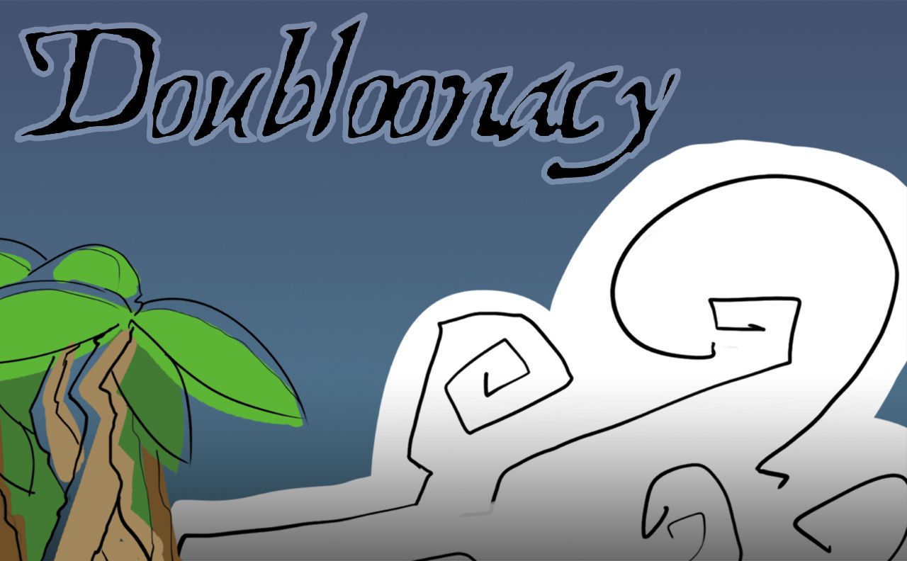
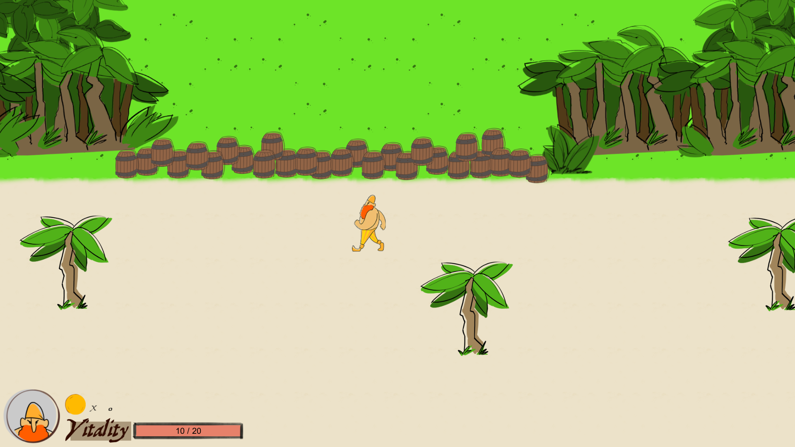

Doubloonacy - April 2016 Developed in: Unity3D 5.2.1 Development time: 6 weeks Team size: 5 Role: Lead programming and technical director Summary: Doubloonacy is a 2D hack-and-slash role playing game where you assume the role of the infamous Gingerbeard, who is on a mission to reclaim his lost treasure while avoiding the dead pirates that came before him and defeat his arch nemesis: Captain Northington.
 